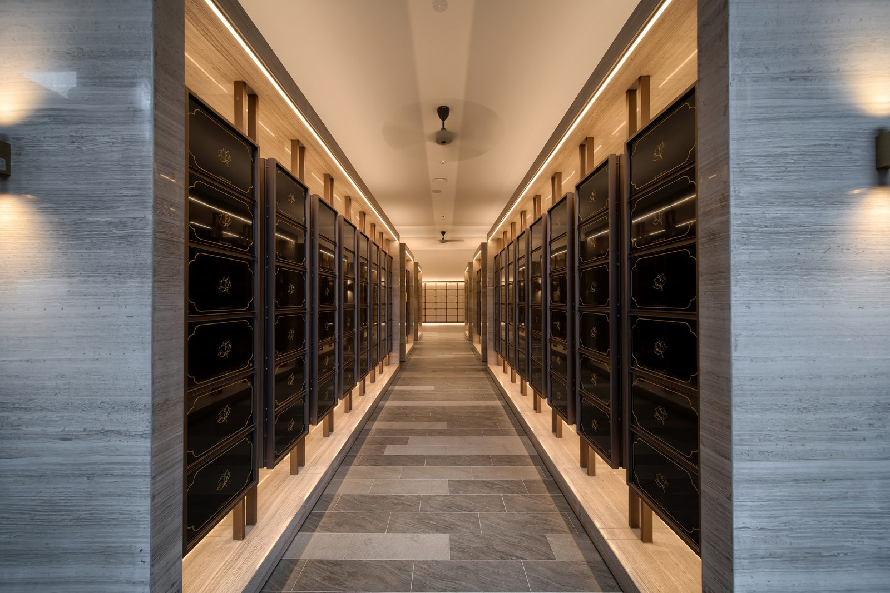
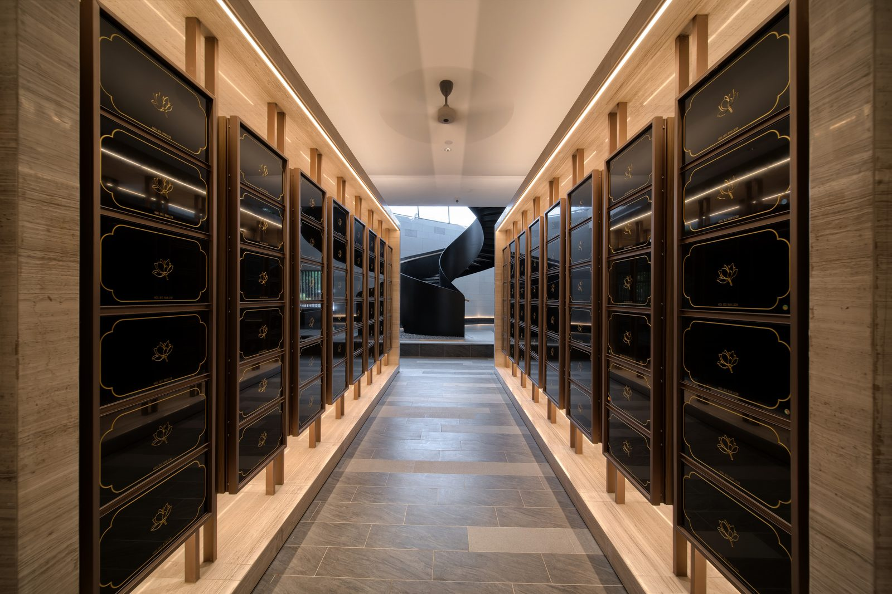
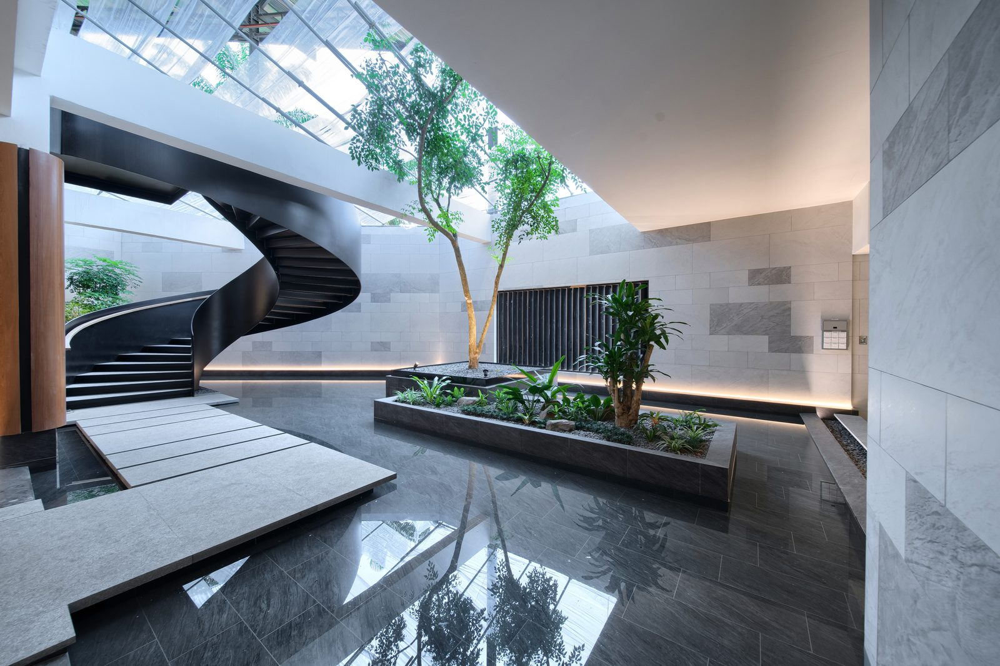
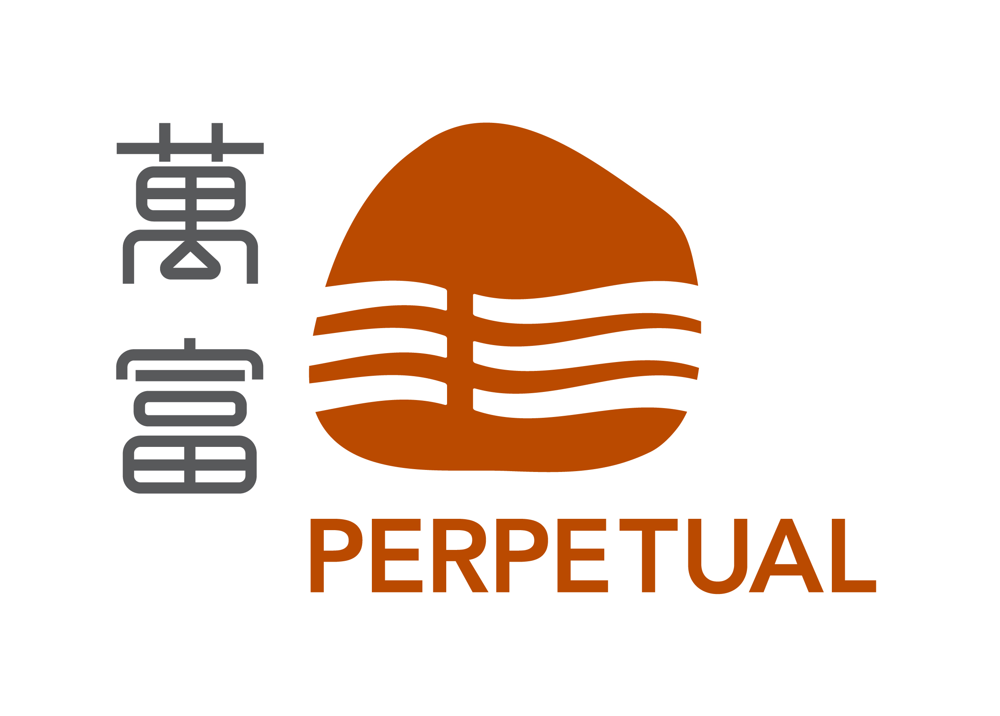
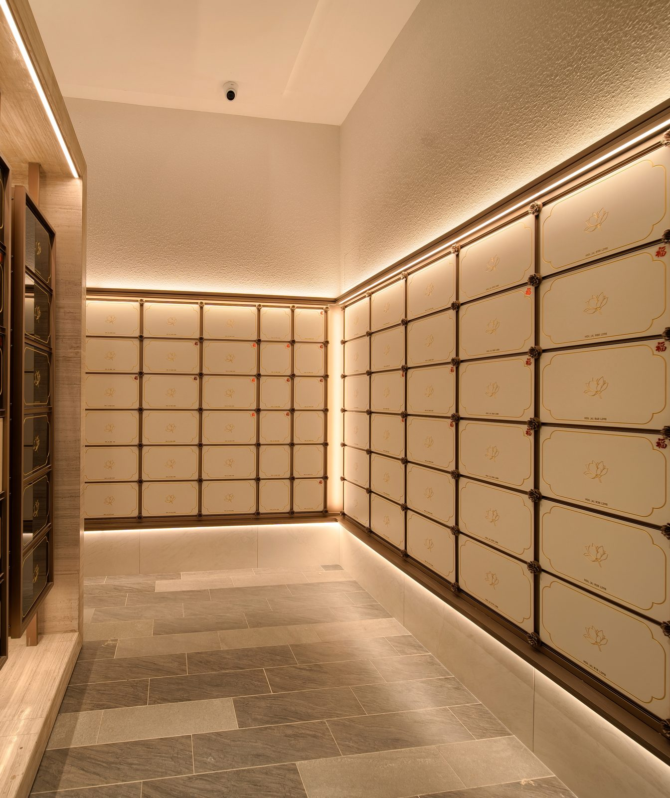

走廊


中庭

- 万富山庄全年天天开放；建议提前预约。
- 平时祭拜的安排，专员会在同一个 WhatsApp 聊天里跟你说明。
先了解，不代表现在就要决定。
第一次接触这些资讯，会有很多问题很正常。我们可以先提供资料、回答问题，再由您慢慢考虑。

有的家庭在考虑骨灰位时，最主要的考量是孩子日后来祭拜方不方便
恒定楼是开放式、通风的骨灰阁。以下是恒定楼的实拍照片。
WhatsApp 018-286 8889万富山庄全年天天开放




第一次接触这些资讯，会有很多问题很正常。我们可以先提供资料、回答问题，再由您慢慢考虑。